ऑफ-रोड वाहन और स्नोमोबाइल
यह पुस्तिका केवल एक मार्गदर्शिका है। आधिकारिक उद्देश्यों के लिए, कृपया ओंटारियो के राजमार्ग यातायात अधिनियम , मोटरयुक्त हिम वाहन अधिनियम और ऑफ-रोड वाहन अधिनियम का संदर्भ लें।
यदि आप शुरुआती स्तर का ड्राइविंग प्रशिक्षण ले रहे हैं, तो सुनिश्चित करें कि यह मंत्रालय द्वारा अनुमोदित स्कूल से हो।
ड्राइवर लाइसेंस के बारे में अधिक जानकारी के लिए, वेबसाइट पर जाएं।
इस पुस्तक की एक प्रति वैकल्पिक प्रारूप में प्राप्त करने के लिए, पब्लिकेशन ओंटारियो से 1-800-668-9938 या (416) 326-5300 पर संपर्क करें या सर्विस ओंटारियो पब्लिकेशन पर जाएँ।
डिस्पोज़िबल एन फ़्रांसीसी। मांग की गई « एमटीओ पर ऑटोमोबिलिस्टों की आधिकारिक मार्गदर्शिका »
गाड़ी चलाना एक विशेषाधिकार है, अधिकार नहीं।
परिचय
ओंटारियो में कई लोगों के लिए ऑफ-रोड वाहन और स्नोमोबाइल मनोरंजन के लोकप्रिय साधन हैं। दूरदराज के इलाकों और आपात स्थितियों में परिवहन के लिए ये आवश्यक भी हैं। लेकिन ये वाहन खिलौने नहीं हैं। यदि आप इनका उपयोग करना चाहते हैं, तो आपको इनके काम करने के तरीके, विभिन्न परिस्थितियों में इन्हें सुरक्षित रूप से चलाने का तरीका और ओंटारियो के कानूनों के बारे में जानकारी होनी चाहिए।
यह याद रखना महत्वपूर्ण है कि ऑफ-रोड वाहन ऑफ-रोड उपयोग के लिए ही बने होते हैं। डर्ट बाइक सार्वजनिक सड़कों पर नहीं चलाई जा सकतीं, हालांकि स्नोमोबाइल कुछ क्षेत्रों में चलाई जा सकती हैं। ऑफ-रोड वाहनों को कुछ राजमार्गों पर सीधे चलने की अनुमति है। हालांकि, केवल एकल-चालक, ऑल-टेरेन वाहन ही कुछ प्रांतीय राजमार्गों और नगरपालिका सड़कों के किनारे पर चलाए जा सकते हैं, जहां उपनियम इसकी अनुमति देते हैं।
इस पुस्तिका के इस भाग में ओंटारियो के कानूनों और स्नोमोबाइल और ऑफ-रोड वाहनों के लिए सुरक्षित ड्राइविंग संबंधी सुझाव दिए गए हैं। कृपया ध्यान रखें कि यह केवल एक मार्गदर्शिका है। आधिकारिक जानकारी के लिए, कृपया ओंटारियो के राजमार्ग यातायात अधिनियम , मोटरयुक्त स्नो वाहन अधिनियम , ऑफ-रोड वाहन अधिनियम , संपत्ति अतिक्रमण अधिनियम और कब्जेदार दायित्व अधिनियम का संदर्भ लें। संबंधित कानून ओंटारियो की ई-लॉ वेबसाइट पर ऑनलाइन उपलब्ध हैं।
ध्यान दें: शराब आपके और दूसरों की सुरक्षा के लिए एक बड़ा खतरा है, चाहे आप कार, मोटरसाइकिल, स्नोमोबाइल या ऑफ-रोड वाहन चला रहे हों। शराब पीने से वाहन चलाने की आपकी क्षमता प्रभावित होती है और दुर्घटना की संभावना बढ़ जाती है।
स्नोमोबाइल चलाना
इस अध्याय में आपको ओंटारियो में मोटरयुक्त स्नो व्हीकल चलाने के लिए आवश्यक सभी जानकारी दी गई है। इसमें आयु संबंधी आवश्यकताएं, पंजीकरण, आप कहां गाड़ी चला सकते हैं और कहां नहीं, सुरक्षा संबंधी सुझाव, यातायात संकेत और स्नोमोबिलर आचार संहिता शामिल हैं।
I. स्नोमोबाइल चलाने की तैयारी करना
ओंटारियो में स्नोमोबाइल चलाने के लिए आपको क्या चाहिए
यदि आपके पास ओंटारियो का वैध ड्राइविंग लाइसेंस (किसी भी श्रेणी का) है, तो आप स्नोमोबाइल चला सकते हैं। यदि आपके पास ड्राइविंग लाइसेंस नहीं है और आपकी आयु 12 वर्ष या उससे अधिक है, तो वैध मोटरयुक्त स्नो-व्हीकल ऑपरेटर लाइसेंस (MSVOL) आपको स्नोमोबाइल के उपयोग के लिए किसी मनोरंजन संगठन द्वारा स्थापित और अनुरक्षित रास्तों पर स्नोमोबाइल चलाने की अनुमति देगा। हालांकि, सार्वजनिक सड़क पर, जहां स्नोमोबाइल चलाने की अनुमति है, स्नोमोबाइल चलाने के लिए आपकी आयु 16 वर्ष या उससे अधिक होनी चाहिए और आपके पास ड्राइविंग लाइसेंस या मोटरयुक्त स्नो-व्हीकल ऑपरेटर लाइसेंस (दोनों नहीं) होना चाहिए।
मोटर चालित स्नो-व्हीकल ऑपरेटर लाइसेंस (MSVOL) ओंटारियो फेडरेशन ऑफ स्नोमोबाइल क्लब्स द्वारा परिवहन मंत्रालय के सहयोग से जारी किया जाता है। लाइसेंस प्राप्त करने के लिए आपको स्नोमोबाइल चालक प्रशिक्षण पाठ्यक्रम सफलतापूर्वक उत्तीर्ण करना होगा। (मोटर चालित स्नो-व्हीकल ऑपरेटर लाइसेंस प्राप्त करने के बारे में अधिक जानकारी के लिए...)
यदि आप ओंटारियो में पर्यटक हैं और यहां रहते हुए स्नोमोबाइल चलाना चाहते हैं, तो आपके पास एक वैध लाइसेंस होना चाहिए जो आपको अपने गृह प्रांत, राज्य या देश में स्नोमोबाइल चलाने की अनुमति देता हो।
अपनी निजी संपत्ति के अलावा किसी भी अन्य स्थान पर स्नोमोबाइल चलाते समय आपको अपना ड्राइविंग लाइसेंस या स्नो-व्हीकल ऑपरेटर लाइसेंस साथ रखना होगा। पुलिस या संरक्षण अधिकारी द्वारा मांगे जाने पर आपको इसे दिखाना होगा।
यदि आपका ड्राइविंग लाइसेंस या स्नो-व्हीकल ऑपरेटर का लाइसेंस निलंबित कर दिया गया है, तो आप किसी भी प्रकार का वाहन किसी भी सड़क पर या उससे बाहर या किसी भी सार्वजनिक स्थान पर नहीं चला सकते हैं।
अपनी स्नोमोबाइल का पंजीकरण और बीमा कराना
स्नोमोबाइल चलाने से पहले, इसे परिवहन मंत्रालय के सर्विस ओंटारियो केंद्र के माध्यम से पंजीकृत कराना अनिवार्य है। यह नियम नए और पुराने, दोनों प्रकार के स्नोमोबाइलों पर लागू होता है, चाहे वे पहले पंजीकृत हों या किसी अन्य क्षेत्र में। यदि आप नया स्नोमोबाइल खरीदते हैं, तो उसे बिक्री के छह दिनों के भीतर पंजीकृत कराना आवश्यक है। आप सर्विस ओंटारियो केंद्र जाने से पहले पंजीकरण फॉर्म डाउनलोड करके भर सकते हैं।
यदि आप नई स्नोमोबाइल खरीदते हैं, तो आपका डीलर बिक्री के छह दिनों के भीतर इसे परिवहन मंत्रालय में पंजीकृत करवा देगा। यदि आप पहले से पंजीकृत पुरानी स्नोमोबाइल खरीदते हैं, तो पंजीकरण अपने नाम पर करवाने के लिए आपको केवल हस्ताक्षरित स्नो-व्हीकल परमिट और बिक्री का बिल प्रस्तुत करना होगा।
स्नोमोबाइल का पंजीकरण कराने के लिए आपको शुल्क देना होगा। यह शुल्क स्नोमोबाइल के मालिक द्वारा एक बार ही देना होगा। पंजीकरण के बाद, आपको एक परमिट और एक पंजीकरण संख्या का स्टिकर दिया जाएगा जिसे आपको अपने स्नोमोबाइल पर लगाना होगा।
अपने स्नोमोबाइल के काउलिंग या इंजन कवर के दोनों ओर स्टिकर चिपकाएँ। इसे इस प्रकार लगाएँ कि पंजीकरण संख्या का पहला अक्षर काउलिंग के पिछले हिस्से से 10 से 15 सेंटीमीटर की दूरी पर हो। यदि वाहन की बनावट के कारण स्टिकर काउलिंग पर नहीं लग पाता है, तो इसे टनल के दोनों ओर, लाइट रिफ्लेक्टर के पास लगाएँ।
यदि आप अपनी पंजीकृत स्नोमोबाइल को अपनी निजी संपत्ति पर नहीं चला रहे हैं या आप उत्तरी ओंटारियो के निवासी नहीं हैं जिन्हें छूट प्राप्त है, तो आपके पंजीकरण स्टिकर पर एक सत्यापन स्टिकर होना अनिवार्य है। आपको हर समय अपना ड्राइविंग लाइसेंस या MSVOL (मल्टीपल वॉल्यूम लाइसेंस) और अपने वाहन के पंजीकरण का प्रमाण साथ रखना होगा और पूछे जाने पर पुलिस या संरक्षण अधिकारी को दिखाना होगा।
सार्वजनिक राजमार्गों पर स्नोमोबाइल चलाने की अनुमति केवल तभी है जब आप सीधे राजमार्ग पार कर रहे हों। कुछ विशेष परिस्थितियों में, स्नोमोबाइल कुछ राजमार्गों के उन हिस्सों पर भी चल सकते हैं जहाँ मरम्मत की सुविधा उपलब्ध नहीं है। स्थानीय नगरपालिकाओं को अपने अधिकार क्षेत्र में आने वाले राजमार्गों पर स्नोमोबाइल के उपयोग को नियंत्रित करने वाले नियम बनाने का भी अधिकार है।
इस स्टिकर के नवीनीकरण के लिए वार्षिक शुल्क लगता है। स्टिकर को स्टिकर के ऊपरी दाहिने कोने पर चिपकाएँ।
अपनी संपत्ति से बाहर स्नोमोबाइल चलाने के लिए आपके पास देयता बीमा होना आवश्यक है। स्नोमोबाइल के लिए बीमा कंपनी द्वारा जारी किया गया बीमा कार्ड अपने पास रखें और पुलिस या संरक्षण अधिकारी द्वारा मांगे जाने पर उसे दिखाएं। यदि कोई अन्य व्यक्ति आपकी सहमति से आपके स्नोमोबाइल का उपयोग करता है, तो होने वाले किसी भी जुर्माने, क्षति या चोट के लिए आप दोनों जिम्मेदार होंगे।
ट्रेल ग्रूमिंग उपकरणों के संचालन के संबंध में अलग-अलग आवश्यकताएं और नियम हैं। ग्रूमिंग उपकरण चलाने से पहले सुनिश्चित करें कि आपको सभी आवश्यक शर्तें पता हैं।
हेलमेट पहनें
स्नोमोबाइल या स्नोमोबाइल द्वारा खींची जाने वाली किसी भी प्रकार की स्लेज या टोबोगन चलाते या सवारी करते समय हेलमेट पहनना अनिवार्य है। हालांकि अपनी ज़मीन पर स्नोमोबाइल चलाते समय हेलमेट पहनना अनिवार्य नहीं है, फिर भी सुरक्षा कारणों से हेलमेट पहनने की सलाह दी जाती है। हेलमेट मोटरसाइकिल या मोटर-चालित साइकिल के लिए निर्धारित मानकों के अनुरूप होना चाहिए और ठोड़ी के नीचे ठीक से कसा होना चाहिए।
अपनी आंखों और चेहरे की सुरक्षा करें
हमेशा फेस शील्ड या गॉगल्स पहनें। फेस शील्ड हवा से होने वाली जलन, पाले से होने वाली जलन, तेज धूप से आंखों में होने वाली जलन और आंखों में पानी आने से बचाती है। साथ ही, जंगल वाले इलाकों में गाड़ी चलाते समय फेस शील्ड आपकी आंखों को टहनियों और डालियों से बचाती है। मौसम के अनुसार हल्के रंग की और टूटने से बचाने वाली शील्ड या गॉगल्स चुनें। उदाहरण के लिए, धुंधले, बादल वाले दिनों के लिए पारदर्शी प्लास्टिक चुनें और देर दोपहर के लिए गहरे पीले रंग की चुनें, जब हल्की रोशनी बर्फ में बने गड्ढों को छिपा सकती है। गहरे रंग की शील्ड या गॉगल्स से बचें, क्योंकि ये आपकी दृष्टि को बाधित कर सकती हैं।
सुनिश्चित करें कि आपकी स्नोमोबाइल अच्छी स्थिति में है
हर यात्रा से पहले, अपनी स्नोमोबाइल की जांच कर लें कि वह ठीक से काम कर रही है। आपकी जान इस पर निर्भर हो सकती है। निम्नलिखित कार्य करें:
- स्टीयरिंग मैकेनिज्म की जांच करें। हैंडल को आगे-पीछे घुमाकर सुनिश्चित करें कि मोड़ सुचारू और निर्बाध रूप से हो रहा है।
- मोटर ड्राइव बेल्ट की स्थिति और तनाव की जांच करें। यदि आवश्यक हो या आपको इसकी विश्वसनीयता के बारे में संदेह हो तो इसे बदल दें।
- इमरजेंसी स्विच, हेडलाइट्स और टेल लाइट्स की जांच करें।
- बैटरी में मौजूद तरल पदार्थ का स्तर जांचें।
- थ्रॉटल और ब्रेक लीवर की जांच करें। सुनिश्चित करें कि वे आसानी से चल रहे हों।
- स्पार्क प्लग और टैंक में ईंधन का स्तर जांच लें। ऐसा करते समय माचिस या लाइटर का प्रयोग न करें, और इंजन चालू होने पर कभी भी ईंधन न डालें।
स्नोमोबाइल के पीछे टोबोग्गन, स्लेज या किसी भी अन्य प्रकार का वाहन खींचते समय, एक मजबूत टो बार और सुरक्षा चेन का उपयोग अवश्य करें। सुरक्षा के लिए, खींचे जाने वाले वाहनों के आगे और पीछे के किनारों पर परावर्तक सामग्री लगी होनी चाहिए ताकि वे अधिक दिखाई दें। सार्वजनिक सड़कों पर टोइंग की अनुमति आमतौर पर नहीं है, सिवाय सड़क को 90 डिग्री के कोण पर पार करने के। यह नियम किसी फंसे हुए वाहन को निकालने, आपातकालीन बचाव कार्य या ट्रेल की मरम्मत के लिए उपयोग किए जा रहे स्नोमोबाइल पर लागू नहीं होता है।
कहीं भी गाड़ी चलाने से पहले, मालिक की पुस्तिका को ध्यानपूर्वक पढ़ें और इसे हमेशा अपनी स्नोमोबाइल में रखें।
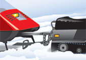
हर यात्रा के लिए अच्छी तरह से तैयार रहें
हर यात्रा की सावधानीपूर्वक तैयारी करना सुरक्षित स्नोमोबिलिंग का एक महत्वपूर्ण हिस्सा है। निकलने से पहले स्थानीय मौसम पूर्वानुमान और बर्फ की स्थिति की जाँच कर लें, क्योंकि ये कुछ ही घंटों में बदल सकते हैं। बिना निशान वाले जमे हुए झीलों और नदियों पर यात्रा करने से बचें। सुनिश्चित करें कि आप किसी को बता दें कि आप कहाँ जा रहे हैं और कब तक वापस आने की उम्मीद है। किसी साथी के साथ यात्रा करें; अकेले स्नोमोबिल न चलाएँ और हमेशा अपनी क्षमता के अनुसार और परिस्थितियों के अनुरूप ही सवारी करें।
अपने साथ प्राथमिक चिकित्सा किट, वाहन मरम्मत किट, एक अतिरिक्त इग्निशन कुंजी, ड्राइव बेल्ट, स्पार्क प्लग और एक रस्सी ले जाएं। लंबी यात्राओं पर, नक्शा और कंपास (या जीपीएस यूनिट और उसका उपयोग करने का तरीका), टॉर्च, शिकार का चाकू, कुल्हाड़ी, अतिरिक्त ईंधन, वाटरप्रूफ बॉक्स में माचिस और ऊर्जावर्धक खाद्य पदार्थ जैसे ग्रेनोला बार रखें। यदि आप जमी हुई झीलों और नदियों पर यात्रा कर रहे हैं, तो तैरने वाला स्नोमोबाइल सूट पहनें और बर्फ तोड़ने वाले औजार साथ रखें ताकि बर्फ टूटने की स्थिति में जीवित रहने की संभावना बढ़ जाए।
II. सुरक्षित और ज़िम्मेदार स्नोमोबिलिंग
आप कहाँ गाड़ी चला सकते हैं और कहाँ नहीं
आप अपनी पंजीकृत स्नोमोबाइल को अपनी निजी संपत्ति पर, उन संगठनों के निजी रास्तों पर जिनसे आप जुड़े हैं, मालिक की अनुमति होने पर निजी संपत्ति पर या अनुमति प्राप्त सार्वजनिक पार्कों और संरक्षण क्षेत्रों में चला सकते हैं।
सार्वजनिक राजमार्गों पर स्नोमोबाइल चलाने की अनुमति केवल तभी है जब आप सीधे राजमार्ग पार कर रहे हों। कुछ विशेष परिस्थितियों में, स्नोमोबाइल कुछ राजमार्गों के उन हिस्सों पर भी चल सकते हैं जहाँ मरम्मत की सुविधा उपलब्ध नहीं है। स्थानीय नगरपालिकाओं को अपने अधिकार क्षेत्र में आने वाले राजमार्गों पर स्नोमोबाइल के उपयोग को नियंत्रित करने वाले नियम बनाने का भी अधिकार है।
कुछ खास तेज़ रफ़्तार वाली सड़कों, फ़्रीवे, क्वीन एलिज़ाबेथ वे, ओटावा क्वींसवे और किचनर-वाटरलू एक्सप्रेसवे पर स्नोमोबाइल चलाना मना है। इसमें इन सड़कों के आसपास का पूरा इलाका भी शामिल है, यानी सड़क के किनारे से किनारे तक का पूरा क्षेत्र। सड़क के सर्विस सेक्शन (किनारे से किनारे तक) पर गाड़ी चलाना मना है, सिवाय सड़क पार करने के। सड़क पार करते समय, आपको गति धीमी करनी होगी, रुकना होगा और फिर 90 डिग्री के कोण पर आगे बढ़ना होगा। अगर आप समूह में स्नोमोबाइल चला रहे हैं, तो पीछे चल रहे ड्राइवर को सड़क पार करने का इशारा न करें। हर राइडर को सामने से आ रहे ट्रैफ़िक का जायज़ा लेना चाहिए और खुद तय करना चाहिए कि सड़क पार करना कब सुरक्षित है। अगर सड़क पार करते समय दृश्यता कम है, तो आप पीछे चल रहे ड्राइवर को रास्ता साफ़ होने का इशारा कर सकते हैं।
जहां मनाही न हो, वहां आप सार्वजनिक सड़कों पर स्नोमोबाइल चला सकते हैं, लेकिन सड़क के किनारे और बाड़ के बीच के हिस्से में सड़क से यथासंभव दूर रहें। स्थानीय नगर पालिकाएं अपने क्षेत्र में, सार्वजनिक सड़कों पर या उससे बाहर, स्नोमोबाइल चलाने को विनियमित या प्रतिबंधित करने वाले नियम बना सकती हैं। जिस नगर पालिका में आप स्नोमोबाइल चलाना चाहते हैं, वहां के नियमों की जानकारी अवश्य प्राप्त कर लें।
रेलवे ट्रैक प्राधिकरण से अनुमति प्राप्त किए बिना आप रेलवे ट्रैक पर स्नोमोबाइल नहीं चला सकते।
सार्वजनिक पगडंडियाँ
ओंटारियो के सार्वजनिक ट्रेल्स कई स्नोमोबाइल क्लबों द्वारा स्थापित और रखरखाव किए जाते हैं। इन ट्रेल्स पर ओंटारियो प्रांतीय पुलिस, नगर पुलिस, संरक्षण अधिकारी और स्नोमोबाइल ट्रेल ऑफिसर पेट्रोल द्वारा गश्त की जाती है। कुछ क्लबों में स्नोमोबाइल चलाने के लिए ट्रेल परमिट होना और उसे प्रदर्शित करना अनिवार्य है। कुछ अन्य क्लब ट्रेल परमिट के बिना भी ट्रेल्स का उपयोग करने की अनुमति देते हैं। ट्रेल्स पर ऐसे संकेत हो सकते हैं जिनमें ट्रेल परमिट की आवश्यकता बताई गई हो। यदि आपको संदेह है, तो ट्रेल परमिट की आवश्यकता है या नहीं, यह जानने के लिए स्थानीय स्नोमोबाइल क्लब से संपर्क करें।
ओंटारियो फेडरेशन ऑफ स्नोमोबाइल क्लब्स द्वारा संचालित ट्रेल्स के लिए, आपके पास ट्रेल परमिट होना और उसे प्रदर्शित करना अनिवार्य है। इसमें निजी संपत्ति, नगरपालिका संपत्ति और सरकार के स्वामित्व वाली भूमि पर स्थित ट्रेल्स शामिल हैं। कुछ स्नोमोबाइल-ट्रेल उपयोगकर्ता समूहों को परमिट की आवश्यकता से छूट प्राप्त है। छूट के पात्र समूह और प्रमाण के रूप में आवश्यक दस्तावेज़ मोटर चालित स्नो व्हीकल्स अधिनियम के नियमों के ट्रेल-परमिट अनुभाग में शामिल हैं। छूट प्राप्त स्नोमोबाइल चालकों को उचित दस्तावेज़ साथ रखने होंगे और अनुरोध किए जाने पर उन्हें दिखाना होगा।
ट्रेल और ट्रेल परमिट के बारे में जानकारी के लिए, अपने स्थानीय स्नोमोबाइल क्लब या ओंटारियो फेडरेशन ऑफ स्नोमोबाइल क्लब्स, 501 वेल्हम रोड, यूनिट 9, बैरी, ओंटारियो L4N 8Z6 से संपर्क करें। फ़ोन: 705-739-7669; फ़ैक्स: 705-739-5005; या ईमेल: info@ofsc.on.ca । आप OFSC की वेबसाइट पर भी जा सकते हैं।
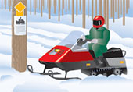
अतिक्रमण न करें
यदि आप मालिक की अनुमति के बिना निजी संपत्ति पर स्नोमोबाइल चलाते हैं, तो आप अतिक्रमण कर रहे हैं। मालिक के लिए "अतिक्रमण निषेध" का बोर्ड लगाना अनिवार्य नहीं है। यदि आप निजी संपत्ति पर स्नोमोबाइल चला रहे हैं, तो पुलिस, संपत्ति के मालिक या उनके प्रतिनिधि द्वारा पूछे जाने पर आपको रुकना होगा और अपनी पहचान बतानी होगी। यदि आपको संपत्ति छोड़ने के लिए कहा जाता है, तो आपको तुरंत ऐसा करना होगा।
यदि आप पर अनाधिकृत प्रवेश का आरोप साबित होता है, तो आप पर जुर्माना लगाया जा सकता है। इसके अतिरिक्त, आपको हर्जाना देने का आदेश भी दिया जा सकता है। कुछ परिस्थितियों में, आपको मुकदमे की लागत भी वहन करनी पड़ सकती है। स्नोमोबाइल चालक के विरुद्ध आरोप लगाए जाएंगे। यदि चालक अज्ञात है, तो यदि स्नोमोबाइल का उपयोग मालिक की अनुमति से किया गया था, तो मालिक पर आरोप लगाया जा सकता है।
संपत्ति अतिक्रमण अधिनियम की एक प्रति पब्लिकेशन्स ओंटारियो के माध्यम से उपलब्ध है। फोन: (416) 326-5300 या 1-800-668-9938। यह सर्विसओंटारियो पब्लिकेशन्स और ओंटारियो की ई-लॉज़ वेबसाइट पर इंटरनेट के माध्यम से भी उपलब्ध है।
रेलवे पटरियों पर अनाधिकृत प्रवेश करना रेलवे सुरक्षा अधिनियम के तहत एक अपराध है।
गति सीमा का पालन करें
किसी भी सार्वजनिक पार्क या प्रदर्शनी मैदान में, या किसी भी ऐसी सड़क पर जहाँ अन्य वाहनों के लिए गति सीमा 50 किमी/घंटा या उससे कम हो, स्नोमोबाइल 20 किमी/घंटा से अधिक गति से न चलाएँ। स्नोमोबाइल ट्रेल्स पर, या किसी भी ऐसी सड़क पर जहाँ अन्य वाहनों के लिए गति सीमा 50 किमी/घंटा से अधिक हो, स्नोमोबाइल 50 किमी/घंटा से अधिक गति से न चलाएँ। अप्रत्याशित खतरों पर प्रतिक्रिया करने और सुरक्षित रूप से रुकने के लिए हमेशा अपने और आगे वाले स्नोमोबाइल के बीच अतिरिक्त दूरी रखें। रात में अपनी गति कम रखें और हेडलाइट्स से आगे न निकलें। रात में कम दृश्यता के कारण खतरों को पहचानना और दूरी का अनुमान लगाना अधिक कठिन हो जाता है। रात में दिखाई देने के लिए हमेशा परावर्तक चिह्नों वाले कपड़े पहनें।
नगरपालिकाएं अपनी सीमाओं के भीतर सार्वजनिक सड़कों, पगडंडियों और पार्कों में स्नोमोबाइल के लिए अन्य गति सीमाएं निर्धारित कर सकती हैं। नगरपालिका के नियमों की जांच करें।
पुलिस के लिए रुकें
पुलिस अधिकारी के कहने पर आपको सुरक्षित रूप से रुकना होगा। यदि आप नहीं रुकते हैं, तो आपको जुर्माना भरना पड़ सकता है या जेल जाना पड़ सकता है, या दोनों हो सकते हैं। यदि आप पुलिस अधिकारी के आदेश पर न रुकने के दोषी पाए जाते हैं और अदालत मानती है कि आपने पीछा करने के दौरान जानबूझकर पुलिस से बचने की कोशिश की - यानी पुलिस से भागने का प्रयास किया - तो आपका लाइसेंस कम से कम पांच साल के लिए निलंबित कर दिया जाएगा। यदि पुलिस से बचने के परिणामस्वरूप किसी की मृत्यु हो जाती है या कोई घायल हो जाता है, तो आपका लाइसेंस 10 साल तक के लिए निलंबित किया जा सकता है।
दुर्घटनाओं की सूचना पुलिस को दें
यदि किसी दुर्घटना के परिणामस्वरूप किसी व्यक्ति को चोट लगती है या संपत्ति को 400 डॉलर से अधिक का नुकसान होता है, तो आपको तुरंत पुलिस को इसकी सूचना देनी होगी।
नशे की हालत में वाहन न चलाएं
स्नोमोबाइल दुर्घटनाओं में शराब एक प्रमुख कारण है। स्नोमोबाइल चलाने से पहले किसी भी मात्रा में शराब का सेवन करने से सही निर्णय लेने की आपकी क्षमता प्रभावित होती है। शराब थकान बढ़ाती है, प्रतिक्रिया समय को धीमा करती है और हाइपोथर्मिया का खतरा बढ़ाती है।
शराब या ड्रग्स के प्रभाव में स्नोमोबाइल चलाना कानून के खिलाफ है।
शराब पीकर गाड़ी चलाना एक घातक संयोजन है। सभी चालकों, विशेषकर अनुभवहीन चालकों को, गाड़ी चलाते समय पूरी तरह से ध्यान केंद्रित करने में सक्षम होना चाहिए।
गाड़ी चलाने से पहले किसी भी मात्रा में शराब का सेवन करने से आपके निर्णय लेने की क्षमता प्रभावित होती है। यहां तक कि एक घूंट भी गाड़ी चलाते समय अचानक होने वाली घटनाओं पर ध्यान केंद्रित करने और प्रतिक्रिया देने की आपकी क्षमता को कम कर सकता है। खून में अल्कोहल की मात्रा बढ़ने से आपको दूरी का अनुमान लगाने में परेशानी हो सकती है और आपकी दृष्टि धुंधली हो सकती है। थकान, मनोदशा, भोजन करने का समय और मात्रा जैसे कारक भी आपकी ड्राइविंग क्षमता पर शराब के प्रभाव को प्रभावित कर सकते हैं।
पुलिस किसी भी चालक को रोककर यह पता लगा सकती है कि क्या शराब या ड्रग्स की जांच आवश्यक है। वे सड़क किनारे अचानक जांच भी कर सकते हैं। पुलिस द्वारा रोके जाने पर, आपको सांस में अल्कोहल की जांच करने वाली मशीन में फूंक मारने, सड़क किनारे जांच उपकरण का उपयोग करने या शारीरिक समन्वय परीक्षण करने के लिए कहा जा सकता है। यदि आप सांस का नमूना देने या शारीरिक समन्वय परीक्षण करने में विफल रहते हैं या इनकार करते हैं, तो आप पर आपराधिक संहिता के तहत मुकदमा चलाया जाएगा।
अगर मशीन की रीडिंग से पता चलता है कि आपने शराब पी है, तो आपको ब्रेथलाइज़र टेस्ट के लिए पुलिस स्टेशन ले जाया जा सकता है। ब्रेथलाइज़र आपकी सांस का उपयोग करके आपके रक्त में अल्कोहल की मात्रा मापता है।
यदि आप सांस का नमूना नहीं दे सकते हैं या सांस का नमूना प्राप्त करना अव्यावहारिक है, तो पुलिस अधिकारी आपसे इसके बजाय रक्त का नमूना देने की मांग कर सकता है।
यदि पुलिस को लगता है कि किसी वाहन चालक ने मादक पदार्थ या शराब तथा मादक पदार्थ के मिश्रण का सेवन किया है, तो वे चालक का मूल्यांकन करवा सकते हैं और उससे रक्त, मुख द्रव या मूत्र के नमूने देने को कह सकते हैं। यदि आप इनमें से किसी भी मांग का पालन करने में विफल रहते हैं या इनकार करते हैं, तो आप पर आपराधिक संहिता के तहत मुकदमा चलाया जाएगा।
शराब के नशे में या रक्त में 100 मिलीलीटर में 80 मिलीग्राम से अधिक अल्कोहल (0.08) होने पर गाड़ी चलाना आपराधिक संहिता के तहत अपराध है। यहां तक कि अगर आपके रक्त में अल्कोहल की मात्रा 0.08 से कम है, तब भी आप पर आपराधिक संहिता के तहत नशे में गाड़ी चलाने का आरोप लगाया जा सकता है।
यदि आपके रक्त में अल्कोहल की मात्रा (बीएसी) .08 से अधिक है या यदि आप सांस या शारीरिक द्रव का नमूना देने में विफल रहते हैं या इनकार करते हैं, शारीरिक समन्वय परीक्षण करते हैं या मूल्यांकन के लिए उपस्थित होते हैं, तो आपको तत्काल 90 दिनों के लिए प्रशासनिक रूप से ड्राइवर का लाइसेंस निलंबित कर दिया जाएगा।
यदि सड़क किनारे जांच उपकरण पर आपका अल्कोहल स्तर .05 से .08 के बीच आता है, तो आपका ड्राइविंग लाइसेंस तुरंत निलंबित कर दिया जाएगा। पहली बार ऐसा होने पर, आपका लाइसेंस तीन दिनों के लिए निलंबित किया जाएगा। पांच साल की अवधि में दूसरी बार ऐसा होने पर, आपका लाइसेंस तुरंत सात दिनों के लिए निलंबित कर दिया जाएगा और आपको अल्कोहल से संबंधित सुधारात्मक शिक्षा कार्यक्रम में भाग लेना होगा। पांच साल की अवधि में तीसरी या उसके बाद की बार ऐसा होने पर, आपका लाइसेंस तुरंत 30 दिनों के लिए निलंबित कर दिया जाएगा और आपको अल्कोहल से संबंधित सुधारात्मक उपचार कार्यक्रम में भाग लेना होगा तथा आपके लाइसेंस पर छह महीने के लिए इग्निशन इंटरलॉक की शर्त लागू कर दी जाएगी। यदि आप इग्निशन इंटरलॉक उपकरण स्थापित नहीं करने का विकल्प चुनते हैं, तो आपको लाइसेंस से यह शर्त हटाए जाने तक वाहन नहीं चलाना चाहिए।
यदि आपकी आयु 21 वर्ष या उससे कम है और आपके पास पूर्ण श्रेणी का ड्राइविंग लाइसेंस है, तो शराब पीकर गाड़ी चलाना मना है। आपके रक्त में अल्कोहल का स्तर शून्य होना चाहिए। यदि आप शराब की मौजूदगी में गाड़ी चलाते हुए पकड़े जाते हैं, तो आपका ड्राइविंग लाइसेंस तुरंत 24 घंटे के लिए निलंबित कर दिया जाएगा और दोषी पाए जाने पर आपको जुर्माना और 30 दिनों के लिए लाइसेंस निलंबन का सामना करना पड़ेगा।
ओंटारियो की क्रमिक लाइसेंसिंग प्रणाली के लेवल वन या लेवल टू में सभी आयु वर्ग के ड्राइवरों के लिए गाड़ी चलाते समय रक्त में अल्कोहल का स्तर शून्य होना अनिवार्य है। शराब पीकर गाड़ी चलाते पकड़े जाने पर नए ड्राइवरों का ड्राइविंग लाइसेंस 24 घंटे के लिए तुरंत निलंबित कर दिया जाएगा और दोषी पाए जाने पर उन पर जुर्माना लगाया जाएगा और नौसिखिया ड्राइवर के लिए निर्धारित प्रतिबंध योजना के अनुसार निलंबन अवधि लागू होगी। पहली बार पकड़े जाने पर 30 दिनों के लिए लाइसेंस निलंबित किया जाएगा। पांच साल की अवधि में दूसरी बार पकड़े जाने पर 90 दिनों के लिए लाइसेंस निलंबित किया जाएगा। पांच साल की अवधि में तीसरी बार पकड़े जाने पर आपके ड्राइविंग लाइसेंस का नौसिखिया लाइसेंस रद्द कर दिया जाएगा और आपको G1 लाइसेंस के लिए दोबारा आवेदन करना होगा।
नौसिखिया चालकों पर आपराधिक संहिता के तहत भी आरोप लगाया जाएगा यदि उनके खून में अल्कोहल की मात्रा .08 से अधिक हो जाती है और यदि वे .05 और .08 के बीच दर्ज करते हैं तो उन्हें चेतावनी-श्रेणी के निलंबन की सजा जारी की जाएगी।
ड्रग्स
कोई भी दवा जो आपके मूड या आपके आस-पास की दुनिया को देखने और महसूस करने के तरीके को बदल देती है, वह आपके वाहन चलाने के तरीके को प्रभावित करेगी। शराब या किसी अन्य दवा के प्रभाव में वाहन चलाने वालों पर आपराधिक संहिता और एचटीए के तहत प्रतिबंध लागू होते हैं।
यदि किसी वाहन में मादक पदार्थों या शराब और मादक पदार्थ के मिश्रण के कारण वाहन चलाने की क्षमता प्रभावित होने की संभावना हो, तो पुलिस वाहन चालक से शारीरिक समन्वय परीक्षण कराने और मूल्यांकन करवाने के लिए कह सकती है। इसके बाद, पुलिस चालक से रक्त, मुख द्रव या मूत्र के नमूने देने के लिए कह सकती है। यदि आप इनमें से किसी भी मांग का पालन करने में विफल रहते हैं या इनकार करते हैं, तो आप पर आपराधिक संहिता के तहत मुकदमा चलाया जाएगा। साथ ही, आपका ड्राइविंग लाइसेंस तत्काल 90 दिनों के लिए प्रशासनिक रूप से निलंबित कर दिया जाएगा। मारिजुआना और कोकीन जैसे अवैध मादक पदार्थ ही एकमात्र समस्या नहीं हैं। कुछ दवाएं जो आपका डॉक्टर आपको लिख सकता है और कुछ बिना पर्चे के मिलने वाली दवाएं भी आपके वाहन चलाने की क्षमता को प्रभावित कर सकती हैं।
आपको कुछ बातों का ध्यान रखना चाहिए:
- यदि आप डॉक्टर द्वारा बताई गई दवाएं लेते हैं या एलर्जी के इंजेक्शन लगवाते हैं, तो अपने डॉक्टर से चक्कर आना, धुंधली दृष्टि, मतली या उनींदापन जैसे दुष्प्रभावों के बारे में पूछें जो आपके वाहन चलाने को प्रभावित कर सकते हैं।
- आप जो भी बिना पर्चे वाली दवाइयाँ लेते हैं, उनके पैकेट पर दी गई जानकारी अवश्य पढ़ें। कोई भी उत्तेजक दवा, डाइट पिल, ट्रैंक्विलाइज़र या सेडेटिव आपकी ड्राइविंग को प्रभावित कर सकती है। यहाँ तक कि एलर्जी और सर्दी-जुकाम की दवाइयों में भी ऐसे तत्व हो सकते हैं जो आपकी ड्राइविंग पर असर डाल सकते हैं।
- नशीली दवाओं और किसी भी मात्रा में शराब का एक साथ सेवन खतरनाक प्रभाव डाल सकता है, यहां तक कि नशीली दवा लेने के कई दिनों बाद भी। जोखिम न लें - अपने डॉक्टर या फार्मासिस्ट से सलाह लें।
स्नोमोबिलिंग करते समय सुरक्षित रहें
स्नोमोबाइल चलाने के लिए उतनी ही सावधानी और सतर्कता की आवश्यकता होती है जितनी किसी अन्य वाहन को चलाने के लिए। आपको अपनी प्रतिक्रियाओं पर पूर्ण नियंत्रण रखना होगा। यदि आप नौसिखिया हैं, तो बुनियादी ड्राइविंग कौशल सीखने तक अभ्यास करें।
मोड़ लेते समय संतुलन बनाए रखने के लिए अपने वजन का इस्तेमाल करके अपनी गति को नियंत्रित करना सीखें और जिस दिशा में मुड़ना चाहते हैं उस दिशा में झुकें। स्नोमोबाइल पर अपने शरीर को इस तरह से रखें जिससे आपको ड्राइविंग की परिस्थितियों के अनुसार सबसे अधिक आराम और नियंत्रण मिले। समतल जमीन पर, सीट पर दोनों घुटने रखकर बैठें या घुटने टेकें। ऊबड़-खाबड़ या गड्ढों वाली जमीन पर, रनिंग बोर्ड पर खड़े हों और अपने घुटनों को थोड़ा मोड़ें।
राइड पर निकलने से पहले हमेशा अपना रूट प्लान करने के लिए समय निकालें और सुनिश्चित करें कि आपके ग्रुप के बाकी लोग भी रूट जानते हों। अगर आपको रास्ते में रुकना पड़े, तो हमेशा ऐसी जगह चुनें जहाँ आप दिखाई दें और जितना हो सके दाईं ओर गाड़ी रोकें। अगर आप ग्रुप में राइड कर रहे हैं, तो स्नोमोबाइल्स को एक लाइन में पार्क करें और गाड़ियों को चालू रखें ताकि रात में आप दिखाई दें।
जमी हुई बर्फ या बर्फीली सतह पर अपनी गति कम कर लें, क्योंकि रुकना और मुड़ना मुश्किल हो जाता है और इसके लिए अधिक दूरी की आवश्यकता होगी। जब आपकी स्नोमोबाइल गहरी बर्फ में फंस जाए, तो उसे बर्फ से निकालने की कोशिश करने से पहले मोटर बंद करना न भूलें।
जब भी आप बर्फ पर यात्रा करते हैं, तो आप अपनी और अपने यात्री की सुरक्षा को खतरे में डालते हैं। दबाव से बनने वाली दरारों से सावधान रहें, जिन्हें रात में देखना बहुत मुश्किल होता है। यदि आप किसी अपरिचित क्षेत्र में हैं, तो स्थानीय अधिकारियों या निवासियों से बर्फ की स्थिति, प्रवेश द्वार, निकास द्वार, झरने, तेज धारा या अन्य खतरों के बारे में जानकारी लें। ओंटारियो प्रांतीय पुलिस द्वारा बर्फ की स्थिति के बारे में स्थानीय रेडियो प्रसारण चेतावनियों को सुनें। यदि आपको जमी हुई झीलों या नदियों पर गाड़ी चलानी ही पड़े, तो तैरने वाले स्नोमोबाइल सूट का उपयोग करने पर विचार करें। यह आपकी जान बचा सकता है।
जब भी आप गाड़ी चला रहे हों, हमेशा पगडंडियों और राजमार्ग के संकेतों पर ध्यान दें और उनका पालन करें। राइडिंग करते समय हमेशा पगडंडी के दाहिनी ओर रहें और पहाड़ियों और मोड़ों पर सावधानी बरतें। आपको हमेशा अप्रत्याशित परिस्थितियों के लिए तैयार रहना चाहिए। सड़क और रेल क्रॉसिंग पर सावधानी बरतें। ट्रक और ट्रेनें अक्सर बर्फ के बड़े-बड़े बादल उड़ा देती हैं जिससे दृश्यता काफी कम हो जाती है। राइडिंग करते समय अपने साथ मोबाइल फोन रखें।
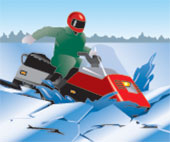
III. स्नोमोबाइल के संकेत और चिह्न
हाथ के इशारे
संकेत दूसरों को बताते हैं कि आप क्या करना चाहते हैं, जिससे उन्हें धीमा होने, रुकने या मुड़ने की तैयारी करने का मौका मिलता है। रुकने, अचानक धीमा होने या मुड़ने से पहले संकेत देने के लिए हाथ के संकेतों का उपयोग करें। क्रिया करने से काफी पहले सही संकेत दें और सुनिश्चित करें कि दूसरे उसे देख सकें। ये चित्र राष्ट्रीय स्तर पर मान्यता प्राप्त हाथ और बाजू के संकेतों को दर्शाते हैं।
बांया मोड़
अपनी बाईं बांह को सीधा बाहर की ओर फैलाएं और मोड़ की दिशा में इशारा करें।
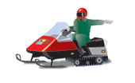
बायां मोड़
अपनी बाईं बांह को कंधे की ऊंचाई तक उठाएं, कोहनी मुड़ी हुई हो।
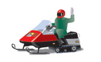
रुकना
अपने दाहिने हाथ को हथेली को सपाट रखते हुए सीधे सिर के ऊपर उठाएं।
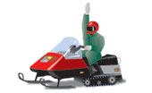
मंदीकरण
अपने बाएं हाथ को शरीर के बगल में नीचे की ओर फैलाएं। सावधानी का संकेत देने के लिए अपने हाथ को ऊपर और नीचे हिलाएं।
सामने से आ रही स्नोमोबाइल
अपनी बाईं बांह को कंधे की ऊंचाई तक उठाएं, कोहनी को मोड़ें और सिर के ऊपर से बाएं से दाएं ओर गति करते हुए, रास्ते के दाहिनी ओर इशारा करें।
स्नोमोबाइल्स पीछे-पीछे चल रहे हैं
अपनी बाईं बांह को कंधे की ऊंचाई तक उठाएं, कोहनी को मोड़ें। अपने अंगूठे को कंधे के ऊपर आगे से पीछे की ओर ले जाएं, जैसे कोई व्यक्ति लिफ्ट मांग रहा हो।
लाइन में आखिरी स्नोमोबाइल
कोहनी मोड़कर, अपनी बाईं बांह को कंधे की ऊंचाई तक उठाएं और मुट्ठी कस लें।
पथ चिह्न
रास्ते में लगे संकेत आपको कुछ खास स्थितियों में क्या करना है, इसके बारे में महत्वपूर्ण जानकारी देते हैं। यहां कुछ आम संकेत और उनके अर्थ दिए गए हैं। चूंकि ये संकेत आधिकारिक यातायात संकेत नहीं हैं, इसलिए इनका आकार और रंग अलग-अलग हो सकता है। ऐसे संकेतों पर ध्यान दें और उनका पालन करें।
रुकना
स्टॉप साइन आठ भुजाओं वाला होता है और इसकी पृष्ठभूमि लाल रंग की होती है जिस पर सफेद अक्षर लिखे होते हैं। पूरी तरह से रुकें।
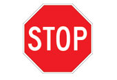
आगे रोकें
आगे आने वाले स्टॉप साइन के लिए रुकने के लिए तैयार रहें।
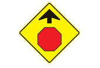
स्नोमोबिलिंग की अनुमति है
हरे गोले वाला चिन्ह यह दर्शाता है कि आप उस गोले के अंदर दर्शाई गई गतिविधि कर सकते हैं। आप इस चिन्ह वाले क्षेत्र में स्नोमोबाइल चला सकते हैं।
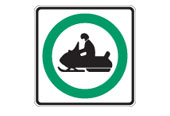
स्नोमोबिलिंग प्रतिबंधित है
लाल घेरे के अंदर एक रेखा खींचे हुए चिन्ह का अर्थ है कि घेरे के अंदर दर्शाई गई गतिविधि की अनुमति नहीं है। इस चिन्ह वाले क्षेत्र में स्नोमोबाइल न चलाएं।
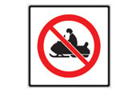
दिशासूचक चिह्न
ये संकेत आपको पगडंडी पर चलने की दिशा के बारे में जानकारी देते हैं। संकेत में दिए गए निर्देशों का पालन करें।
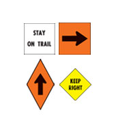
यातायात संकेत
यदि आप अपनी स्नोमोबाइल को किसी भी सार्वजनिक सड़क पर चला रहे हैं, तो आपको यातायात संकेतों और उनके अर्थों से अवगत होना चाहिए। निम्नलिखित यातायात संकेत विशेष रूप से स्नोमोबाइल से संबंधित हैं।
स्नोमोबाइल की अनुमति है
जिस सड़क या राजमार्ग पर यह चिन्ह लगा हो, वहां स्नोमोबाइल चलाने की अनुमति है।
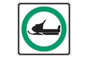
स्नोमोबाइल प्रतिबंधित हैं
जिस सड़क या राजमार्ग पर यह चिन्ह लगा हो, उस पर स्नोमोबाइल चलाने की अनुमति नहीं है।
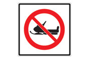
स्नोमोबाइल पार करते हुए
ये संकेत चालकों को चेतावनी देते हैं कि स्नोमोबाइल को सड़क पार करने की अनुमति है।
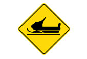
वायु शीतलक प्रभाव
सर्दियों में बाहरी गतिविधियों की योजना बनाते समय हवा की ठंडक के कारक को ध्यान में रखना महत्वपूर्ण है।
हवा और कम तापमान के संयुक्त प्रभाव को विंड-चिल फैक्टर कहते हैं, जिसके कारण सर्दियों में हवा वाले दिन वास्तविक तापमान से कहीं अधिक ठंड महसूस होती है। ऐसा हवा के तेज़ शीतलन प्रभाव के कारण होता है। उदाहरण के लिए, यदि वास्तविक तापमान -10°C है और हवा की गति 40 किमी/घंटा है, तो तापमान -31°C जैसा महसूस होगा।
आपको ठंडी हवा के प्रभाव का ध्यान रखना चाहिए ताकि आप उचित कपड़े पहन सकें। वाटरप्रूफ बाहरी परतें और कई अंदरूनी परतें अतिरिक्त सुरक्षा प्रदान करती हैं और तापमान बढ़ने पर कपड़े उतारने की सुविधा देती हैं। साथ ही, सुनिश्चित करें कि छोटे बच्चे ठीक से कपड़े पहने हों और उनके हाथ और चेहरे अच्छी तरह से ढके हों। बालाक्लावा पहनने से ठंड लगने का खतरा कम हो जाता है। लंबे समय तक ठंडी हवा के संपर्क में रहने से हाइपोथर्मिया हो सकता है।
नीचे दिया गया चार्ट आपको हवा की ठंडक की गणना करने में मदद कर सकता है ताकि आप संभावित खतरनाक स्थितियों से अवगत हो सकें।
पवन-शीतलन गणना चार्ट
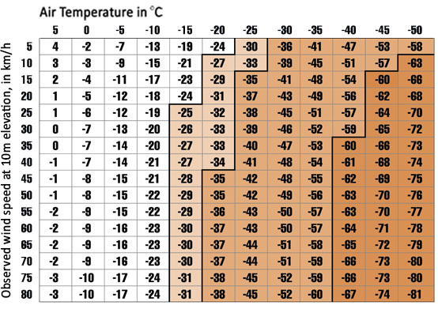
अनुमानित सीमाएँ:
-25°C या उससे कम तापमान पर पवन-शीतलन: लंबे समय तक इसके संपर्क में रहने पर पाला पड़ने का खतरा।
-35°C या उससे कम तापमान पर ठंडी हवा चलने पर 10 मिनट में पाला लगने की संभावना; त्वचा गर्म होती है और अचानक हवा के संपर्क में आती है। (यदि त्वचा शुरू में ठंडी हो तो समय कम लगता है।)
-60°C या उससे कम तापमान पर ठंडी हवा चलने पर दो मिनट से भी कम समय में पाला लगने की संभावना; त्वचा गर्म होती है और अचानक हवा के संपर्क में आती है। (यदि त्वचा शुरू में ठंडी हो तो समय कम लगता है।)
स्नोमोबाइल चालक प्रशिक्षण पाठ्यक्रम लें
यदि आपकी आयु 12 से 15 वर्ष के बीच है, या यदि आप 16 वर्ष या उससे अधिक आयु के हैं और आपके पास ओंटारियो का वैध ड्राइविंग लाइसेंस नहीं है, तो आपको स्नोमोबाइल चालक का लाइसेंस प्राप्त करने के लिए स्नोमोबाइल चालक प्रशिक्षण पाठ्यक्रम सफलतापूर्वक उत्तीर्ण करना होगा। स्नोमोबाइल चालक प्रशिक्षण पाठ्यक्रम लाइसेंस प्राप्त और अनुभवी स्नोमोबाइल चालकों के लिए भी एक उपयोगी रिफ्रेशर हो सकता है।
यह कोर्स लगभग छह घंटे का है और आमतौर पर तीन दिनों में आयोजित किया जाता है। इसमें सुरक्षित ड्राइविंग के तरीके, स्नोमोबाइल कानून, स्नोमोबाइल का ज्ञान, रखरखाव, ड्राइविंग पोजीशन, बचाव, प्राथमिक चिकित्सा, रात में ड्राइविंग, ट्रेल साइन, कपड़े और भंडारण आदि शामिल हैं। साथ ही, यह आपको दुर्घटनाओं और संपत्ति के नुकसान से बचने में मदद करने के लिए सुरक्षित और विनम्र ड्राइविंग आदतें और कौशल सिखाता है।
यह प्रशिक्षण पाठ्यक्रम ओंटारियो फेडरेशन ऑफ स्नोमोबाइल क्लब्स (OFSC) द्वारा परिवहन मंत्रालय के सहयोग से संचालित किया जाता है और OFSC द्वारा प्रशिक्षित क्लब प्रशिक्षकों द्वारा दिया जाता है। पाठ्यक्रम प्रदान करने वाले निकटतम OFSC सदस्य क्लब का पता और शुल्क जानने के लिए, OFSC ड्राइवर ट्रेनिंग ऑफिस से 501 वेल्हम रोड, यूनिट 9, बैरी, ओंटारियो , L4N 8Z6 पर संपर्क करें। फ़ोन: 705-739-7669 या फैक्स: 705-739-5005। आप OFSC की वेबसाइट पर भी जा सकते हैं।
स्नोमोबाइल चालकों की आचार संहिता
इस आचार संहिता का पालन करें, और आप स्नोमोबिलिंग को एक सम्मानजनक, मजेदार और सुरक्षित शीतकालीन मनोरंजन बनाने में अपना योगदान देंगे।
- मैं एक अच्छा खिलाड़ी और पर्यावरण संरक्षक बनूंगा। मैं समझता हूं कि लोग सभी स्नोमोबाइल चालकों का मूल्यांकन मेरे कार्यों के आधार पर करते हैं। मैं अन्य स्नोमोबाइल चालकों पर अपना प्रभाव डालकर जिम्मेदार आचरण को बढ़ावा दूंगा।
- मैं पगडंडियों या शिविर स्थलों पर कूड़ा नहीं फैलाऊंगा। मैं झीलों या नदियों को प्रदूषित नहीं करूंगा। मैं जो कुछ भी लेकर आया हूं, उसे वापस ले जाऊंगा।
- मैं जीवित पेड़ों, झाड़ियों या अन्य प्राकृतिक संरचनाओं को नुकसान नहीं पहुंचाऊंगा।
- मैं दूसरों की संपत्ति और अधिकारों का सम्मान करूंगा।
- जब मैं किसी को संकट में देखूंगा तो उसकी मदद करूंगा।
- मैं खोज और बचाव कार्यों में सहायता के लिए स्वयं और अपनी स्नोमोबाइल उपलब्ध कराऊंगा।
- मैं पैदल यात्रियों, स्कीयरों, स्नोशूइंग करने वालों, बर्फ पर मछली पकड़ने वालों या अन्य शीतकालीन खेलों में भाग लेने वालों के काम में दखल नहीं दूंगा और न ही उन्हें परेशान करूंगा। मैं मनोरंजन सुविधाओं का आनंद लेने के उनके अधिकारों का सम्मान करूंगा।
- मैं उन सभी संघीय, प्रांतीय और स्थानीय नियमों को जानूंगा और उनका पालन करूंगा जो उन क्षेत्रों में स्नोमोबाइल के संचालन को नियंत्रित करते हैं जहां मैं अपने स्नोमोबाइल का उपयोग करता हूं।
- मैं वन्यजीवों को परेशान नहीं करूंगा। मैं वन्यजीवों की सुरक्षा के लिए निर्धारित क्षेत्रों से दूर रहूंगा।
- मैं उन जगहों पर गाड़ी नहीं चलाऊंगा जहां स्नोमोबाइल चलाना प्रतिबंधित है।
सारांश
इस खंड के अंत तक, आपको निम्नलिखित बातें पता होनी चाहिए:
- सड़कों और पगडंडियों पर स्नोमोबाइल चलाने के लिए लाइसेंस संबंधी आवश्यकताएं
- स्नोमोबाइल की जांच करना, यात्रा की तैयारी करना और उचित सुरक्षात्मक उपकरण पहनना कितना महत्वपूर्ण है?
- आप अपनी स्नोमोबाइल कहाँ चला सकते हैं और कहाँ नहीं चला सकते हैं
- जमी हुई झीलों और नदियों पर शराब पीकर गाड़ी चलाने के खतरे
- स्नोमोबाइल के लिए विशिष्ट हाथ के संकेत, मार्ग चिह्न और यातायात चिह्न
ऑफ-रोड वाहन चलाना
ऑफ-रोड वाहन (कभी-कभी इन्हें ओआरवी भी कहा जाता है) दो या तीन पहियों वाले मोटरयुक्त वाहन होते हैं, साथ ही नियमों के अनुसार चार या अधिक पहियों वाले विशिष्ट वाहन भी होते हैं, जिनका उपयोग मनोरंजन के लिए किया जाता है। ऑफ-रोड वाहनों के उदाहरणों में ऑल-टेरेन वाहन (एटीवी), टू-अप एटीवी , साइड-बाय-साइड एटीवी , यूटिलिटी टेरेन वाहन (यूटीवी), एम्फीबियस एटीवी , ऑफ-रोड मोटरसाइकिल और ड्यून बग्गी शामिल हैं।
ध्यान दें: इलेक्ट्रिक और मोटरयुक्त स्कूटर (जिन्हें आमतौर पर गो-पेड कहा जाता है) और पॉकेट बाइक (जो लगभग दो फीट ऊँची और 70-80 किमी/घंटा की गति वाली छोटी मोटरसाइकिलें होती हैं) ऑफ-रोड वाहन नहीं हैं और इसलिए इन्हें ऑफ-रोड वाहन के रूप में पंजीकृत नहीं किया जा सकता है। ये वाहन मोटरसाइकिल मानकों का भी पालन नहीं करते हैं और इन्हें मोटरसाइकिल के रूप में पंजीकृत नहीं किया जा सकता है।
I. ऑफ-रोड वाहन चलाने की तैयारी करना
ओंटारियो में ऑफ-रोड वाहन चलाने के लिए आपको क्या चाहिए
ऑफ-रोड वाहन चलाने के लिए आपकी आयु 12 वर्ष या उससे अधिक होनी चाहिए, सिवाय उस स्थिति में जब वाहन मालिक के कब्जे वाली भूमि पर या किसी वयस्क की देखरेख में वाहन चलाया जा रहा हो। वयस्क द्वारा प्रत्यक्ष और निकट निगरानी की सलाह दी जाती है।
हालांकि ऑफ-रोड वाहनों को आम तौर पर सार्वजनिक सड़कों पर चलाने की अनुमति नहीं होती है, लेकिन कुछ अपवाद भी हैं। (देखें " आप कहाँ गाड़ी चला सकते हैं और कहाँ नहीं चला सकते " अनुभाग।)
अपने ऑफ-रोड वाहन का पंजीकरण और बीमा कराना
ऑफ-रोड वाहनों का पंजीकरण परिवहन मंत्रालय के सर्विस ओंटारियो केंद्र में कराना अनिवार्य है। यह नियम नए और पुराने दोनों प्रकार के वाहनों पर लागू होता है। ऑफ-रोड वाहन का पंजीकरण कराने के लिए आपकी आयु 16 वर्ष या उससे अधिक होनी चाहिए और आपको वाहन के स्वामित्व का प्रमाण देना होगा।
यदि आप कोई नया ऑफ-रोड वाहन खरीदते हैं, तो आपको डीलर से बिक्री का प्रमाण पत्र प्राप्त करना होगा।
यदि आप किसी प्रयुक्त ऑफ-रोड वाहन को खरीदते हैं या उसका स्वामित्व हस्तांतरित करते हैं, तो आपको पिछले मालिक से वाहन परमिट का हस्ताक्षरित वाहन भाग प्रस्तुत करना होगा।
आपको अपने ऑफ-रोड वाहन का पंजीकरण कराने के लिए शुल्क का भुगतान करना होगा। पंजीकरण के बाद, आपको वाहन परमिट और लाइसेंस प्लेट दी जाएगी। आपको वाहन परमिट हमेशा अपने साथ रखना चाहिए, सिवाय उस स्थिति में जब आप वाहन को मालिक की संपत्ति पर चला रहे हों।
यदि आपके पास दो या तीन पहियों वाला वाहन है, तो लाइसेंस प्लेट को वाहन के सामने स्पष्ट रूप से दिखाई देने वाली जगह पर लगाएं। यदि आपके पास चार या अधिक पहियों वाला वाहन है, तो लाइसेंस प्लेट को वाहन के पीछे लगाएं।
वाहन का मालिक बनने के छह दिनों के भीतर आपको उसका पंजीकरण कराना होगा। यदि आप अपना पता बदलते हैं, तो आपको परिवहन मंत्रालय को छह दिनों के भीतर सूचित करना होगा। आप यह सूचना व्यक्तिगत रूप से सर्विसओंटारियो केंद्र पर जाकर, डाक द्वारा परिवहन मंत्रालय, पीओ बॉक्स 9200, किंग्स्टन, ओंटारियो K7L 5K4 को भेजकर, या सर्विसओंटारियो की वेबसाइट पर दे सकते हैं।
यदि आप अपने ऑफ-रोड वाहन को वाहन मालिक की संपत्ति के अलावा कहीं और चला रहे हैं, तो आपके पास वाहन देयता बीमा होना अनिवार्य है। आपको बीमा कार्ड अपने साथ रखना होगा और पुलिस अधिकारी द्वारा मांगे जाने पर उसे दिखाना होगा। यदि कोई अन्य व्यक्ति आपकी सहमति से आपके ऑफ-रोड वाहन का उपयोग करता है, तो होने वाले किसी भी जुर्माने, क्षति या चोट के लिए आप दोनों जिम्मेदार होंगे।
सड़क निर्माण मशीनें, कृषि वाहन, गोल्फ कार्ट और मोटरयुक्त व्हीलचेयर जैसे वाहनों को ऑफ-रोड वाहन के रूप में पंजीकृत कराने की आवश्यकता नहीं है। इसके अतिरिक्त, 25 से अधिक सदस्यों वाले मोटरसाइकिल संघ द्वारा प्रायोजित रैली या प्रतियोगिता में भाग लेने वाले ऑफ-रोड वाहनों को भी पंजीकरण कराने की आवश्यकता नहीं है।
हेलमेट पहनें
राजमार्ग यातायात अधिनियम के अनुसार, ऑफ-रोड वाहन चलाते या उस पर सवार होते समय, या ऑफ-रोड वाहन द्वारा खींचे जाने वाले किसी भी वाहन पर सवार होते समय आपको मोटरसाइकिल हेलमेट पहनना अनिवार्य है। इसका एकमात्र अपवाद तब है जब आप वाहन मालिक की संपत्ति पर वाहन चला रहे हों। हेलमेट मोटरसाइकिल हेलमेट या मोटर-सहायता प्राप्त वाहन हेलमेट के लिए अनुमोदित मानकों को पूरा करना चाहिए और ठोड़ी के नीचे ठीक से बांधा जाना चाहिए।
अपने चेहरे और शरीर की सुरक्षा करें
हमेशा फेस शील्ड या गॉगल्स पहनें। फेस शील्ड से हवा से होने वाली जलन, धूप से आंखों में जलन और आंखों में पानी आने से बचाव होता है। साथ ही, घने जंगलों में गाड़ी चलाते समय यह आपकी आंखों को टहनियों और डालियों से भी बचाती है। ऐसे पैंट पहनें जो आपके पैरों को ढकें, लंबी बाजू की शर्ट या जैकेट पहनें ताकि आपकी बाहें सुरक्षित रहें और दस्ताने भी पहनें। आपके जूते इतने ऊंचे होने चाहिए कि आपके टखने ढके रहें। गाड़ी चलाते समय दूसरों को आसानी से दिखाई देने के लिए चमकीले रंग के कपड़े पहनें।
सुनिश्चित करें कि आपका वाहन अच्छी स्थिति में है।
हर यात्रा से पहले, अपने वाहन की जांच कर लें कि वह ठीक से काम कर रहा है। आपकी जान इस पर निर्भर हो सकती है। गाड़ी चलाना शुरू करने से पहले वाहन की पूरी तरह से जांच कर लें, जिसमें निम्नलिखित शामिल हैं:
- ब्रेक कंट्रोल की जांच करें और सुनिश्चित करें कि वह सुचारू रूप से चल रहा है। आवश्यकता पड़ने पर उसे समायोजित करें।
- यह सुनिश्चित करें कि स्टीयरिंग की सभी स्थितियों में थ्रॉटल सुचारू रूप से खुलता और बंद होता है।
- टायरों की स्थिति और हवा का दबाव जांच लें।
- ईंधन लाइनों और कनेक्शनों की जांच करें ताकि यह सुनिश्चित हो सके कि कोई रिसाव न हो।
- सुनिश्चित करें कि आपके पास पर्याप्त ईंधन और तेल है।
- सुनिश्चित करें कि इंजन सुचारू रूप से चल रहा है। इंजन चालू करने से पहले सुनिश्चित करें कि गियर न्यूट्रल में है।
- जांच लें कि आपकी लाइटें ठीक से काम कर रही हैं।
कहीं भी गाड़ी चलाने से पहले, मालिक की पुस्तिका पढ़ें।
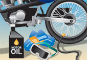
हर यात्रा के लिए अच्छी तरह से तैयार रहें
हर यात्रा की सावधानीपूर्वक तैयारी करना सुरक्षा का एक महत्वपूर्ण उपाय है। स्थानीय मौसम पूर्वानुमान देखें और सुनिश्चित करें कि आप किसी को बता दें कि आप कहाँ जा रहे हैं और कब तक वापस आने की उम्मीद है। साथी का इस्तेमाल करें; अकेले नहीं, दूसरों के साथ गाड़ी चलाएँ। प्राथमिक चिकित्सा किट, वाहन मरम्मत किट, एक अतिरिक्त इग्निशन कुंजी, ड्राइव बेल्ट, स्पार्क प्लग और एक रस्सी साथ रखें। लंबी यात्राओं पर, एक नक्शा और एक कंपास (या एक जीपीएस यूनिट और उसका उपयोग करना जानते हों), टॉर्च, शिकार का चाकू, कुल्हाड़ी, अतिरिक्त ईंधन और माचिस को वाटरप्रूफ बॉक्स में रखें।
II. सुरक्षित और ज़िम्मेदारीपूर्वक ऑफ-रोड वाहन चलाना
आप कहाँ गाड़ी चला सकते हैं और कहाँ नहीं
ओंटारियो में अधिकांश सार्वजनिक सड़कों पर ऑफ-रोड वाहन चलाना प्रतिबंधित है। इसमें सीमा या संपत्ति रेखाओं के बीच का क्षेत्र भी शामिल है, जिसमें डिवाइडर, शोल्डर और नालियां शामिल हैं।
कुछ अपवाद हैं:
- आप ऑफ-रोड वाहन को सीधे कुछ सार्वजनिक सड़कों पर चला सकते हैं।
- आप कुछ सार्वजनिक सड़कों पर तीन या दो से अधिक पहियों वाले कुछ ऑफ-रोड वाहनों को चला सकते हैं, बशर्ते कि वाहन का वजन 450 किलोग्राम या उससे कम हो और उसकी कुल चौड़ाई 1.35 मीटर से अधिक न हो (दर्पणों को छोड़कर)।
- यदि पार्क प्राधिकरण द्वारा अनुमति दी गई हो तो आप प्रांतीय या सार्वजनिक पार्क के भीतर ऑफ-रोड वाहन चला सकते हैं।
- पुलिस अधिकारियों और दमकलकर्मियों जैसे आपातकालीन कर्मी, जो अपने काम के दौरान आवश्यक कर्तव्यों का पालन कर रहे हैं या किसी आपात स्थिति का जवाब दे रहे हैं, सार्वजनिक सड़कों पर ऑफ-रोड वाहन चला सकते हैं।
ऑल-टेरेन व्हीकल्स (एटीवी) के नाम से जाने जाने वाले ऑफ-रोड वाहनों की श्रेणी के लिए भी अपवाद मौजूद हैं।
यदि आप किसी सार्वजनिक सड़क पर या उसके पार ऑफ-रोड वाहन चलाते हैं, तो आपकी आयु कम से कम 16 वर्ष होनी चाहिए और आपके पास वैध ओंटारियो ड्राइवर लाइसेंस (क्लास G2, M2 या उससे ऊपर) होना चाहिए।
आप एटीवी को इस तरह से नहीं चला सकते जिससे प्राकृतिक पर्यावरण, जिसमें मछली के आवास, संपत्ति और पेड़-पौधे शामिल हैं, बाधित या नष्ट हो जाए।
ऑफ-रोड वाहनों को आप कहां चला सकते हैं और ऐसा करते समय आपको किन नियमों का पालन करना चाहिए, इस बारे में अधिक विशिष्ट जानकारी के लिए, आपको राजमार्ग यातायात अधिनियम और ऑफ-रोड वाहन अधिनियम का संदर्भ लेना चाहिए।
ऑल-टेरेन वाहन (एटीवी)
ऑल-टेरेन वाहन ऐसे ऑफ-रोड वाहन होते हैं जिनमें निम्नलिखित विशेषताएं होती हैं: चार पहिए, जिनमें से सभी जमीन के संपर्क में होते हैं; स्टीयरिंग हैंडलबार; और चालक द्वारा बैठने के लिए डिज़ाइन की गई सीट।
ओंटारियो में प्रांतीय राजमार्गों के कुछ हिस्से ऐसे हैं जहाँ आप शोल्डर पर एटीवी चला सकते हैं, बशर्ते एटीवी का वजन 450 किलोग्राम या उससे कम हो, उसकी कुल चौड़ाई 1.35 मीटर से अधिक न हो (दर्पणों को छोड़कर), वह संघीय मोटर वाहन सुरक्षा अधिनियम और अमेरिकी राष्ट्रीय मानक संस्थान मानक की आवश्यकताओं को पूरा करती हो, और उसे केवल चालक के लिए डिज़ाइन किया गया हो, यात्रियों के लिए नहीं। आपको सड़क के उस तरफ चल रहे यातायात की दिशा में ही चलना होगा। यदि शोल्डर नहीं है, शोल्डर अवरुद्ध है, या यदि आप रेलवे क्रॉसिंग पार कर रहे हैं, तो आप अपने वाहन को राजमार्ग के पक्के हिस्से पर चला सकते हैं। जितना संभव हो सके, शोल्डर या राजमार्ग के किनारे के दाईं ओर सुरक्षित रूप से रहें।
यदि कोई सड़क या राजमार्ग नगरपालिका के अधिकार क्षेत्र में आता है, तो नगरपालिका को उस सड़क पर एटीवी चलाने की अनुमति देने के लिए एक उपनियम बनाना होगा। यदि कोई उपनियम नहीं है, तो आप उस सड़क पर एटीवी नहीं चला सकते। नगरपालिका इन स्थानीय सड़कों पर एटीवी के उपयोग के स्थान और समय को निर्धारित करने के लिए भी उपनियम बना सकती है।
जिन सड़कों और राजमार्गों पर एटीवी चलाने की अनुमति है, वहां आपको लाइसेंस और संचालन संबंधी सभी आवश्यकताओं का पालन करना होगा, और आपका वाहन राजमार्ग यातायात अधिनियम और ऑफ-रोड वाहन अधिनियम में सूचीबद्ध सभी उपकरण आवश्यकताओं के अनुरूप होना चाहिए। निम्नलिखित नियमों को याद रखें:
- आपके पास ओंटारियो का वैध ड्राइविंग लाइसेंस (जी2, एम2 या उससे उच्चतर) होना चाहिए।
- आपको ठुड्डी की पट्टी वाला मोटरसाइकिल हेलमेट पहनना होगा जो मजबूती से बंधा हुआ हो।
- आप अपने वाहन में यात्रियों को नहीं ले जा सकते।
- आपको निर्धारित गति सीमा से कम गति पर गाड़ी चलानी होगी: जहां निर्धारित गति 50 किमी/घंटा या उससे कम है, वहां आपको 20 किमी/घंटा या उससे कम गति पर गाड़ी चलानी होगी; जहां निर्धारित गति 50 किमी/घंटा से अधिक है, वहां आपको 50 किमी/घंटा या उससे कम गति पर गाड़ी चलानी होगी।
सामान्य तौर पर, एटीवी को नियंत्रित पहुंच वाले राजमार्गों पर अनुमति नहीं है, जैसे कि 400 श्रृंखला के राजमार्ग और ट्रांस-कनाडा राजमार्ग के अधिकांश भाग, लेकिन उन्हें राजमार्ग 500 से 899, 7000 श्रृंखला के राजमार्ग और कम यातायात वाले राजमार्गों पर जाने की अनुमति है।
किन राजमार्गों पर एटीवी चलाई जा सकती है, इस बारे में अधिक जानकारी के लिए, कृपया राजमार्ग यातायात अधिनियम , ओंटारियो विनियमन 316/03 देखें।
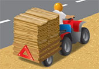
नियमों का पालन करें
यदि कोई पुलिस अधिकारी आपको रुकने का संकेत दे, तो आपको रुकना होगा। निजी संपत्ति पर गाड़ी चलाते समय भूस्वामी भी आपको रोक सकता है। यदि किसी अधिकृत व्यक्ति द्वारा रुकने का संकेत दिया जाए, तो आपको रुकना होगा और पूछे जाने पर अपनी सही पहचान बतानी होगी।
जो भी व्यक्ति लापरवाही से या अन्य व्यक्तियों और संपत्ति के प्रति उचित विचार किए बिना ऑफ-रोड वाहन चलाता है, उस पर लापरवाही से वाहन चलाने का आरोप लगाया जा सकता है। खतरनाक ड्राइविंग और शराब से संबंधित अपराध जैसे अन्य अपराध भी ऑफ-रोड वाहनों के चालकों पर लागू होते हैं। जब आप सार्वजनिक सड़क पर ऑफ-रोड वाहन चलाते हैं, तो राजमार्ग यातायात अधिनियम के तहत आने वाले अपराध भी लागू होते हैं।
दुर्घटनाओं की सूचना पुलिस को दें
सार्वजनिक राजमार्ग पर होने वाली किसी भी दुर्घटना, जिसके परिणामस्वरूप किसी व्यक्ति को चोट लगती है या संपत्ति को 2,000 डॉलर से अधिक का नुकसान होता है, की सूचना आपको तुरंत पुलिस को देनी होगी।
नशे की हालत में वाहन न चलाएं
शराब या ड्रग्स के प्रभाव में ऑफ-रोड वाहन चलाना कानून के खिलाफ है।
शराब पीकर गाड़ी चलाना एक घातक संयोजन है।
गाड़ी चलाने से पहले किसी भी मात्रा में शराब का सेवन करने से आपके निर्णय लेने की क्षमता प्रभावित होती है। यहां तक कि एक घूंट भी गाड़ी चलाते समय अचानक होने वाली घटनाओं पर ध्यान केंद्रित करने और प्रतिक्रिया देने की आपकी क्षमता को कम कर सकता है। खून में अल्कोहल की मात्रा बढ़ने से आपको दूरी का अनुमान लगाने में परेशानी हो सकती है और आपकी दृष्टि धुंधली हो सकती है। थकान, मनोदशा, भोजन करने का समय और मात्रा जैसे कारक भी आपकी ड्राइविंग क्षमता पर शराब के प्रभाव को प्रभावित कर सकते हैं।
पुलिस किसी भी चालक को रोककर यह पता लगा सकती है कि क्या शराब या ड्रग्स की जांच आवश्यक है। वे सड़क किनारे अचानक जांच भी कर सकते हैं। पुलिस द्वारा रोके जाने पर, आपको सांस में अल्कोहल की जांच करने वाली मशीन में फूंक मारने, सड़क किनारे जांच उपकरण का उपयोग करने या शारीरिक समन्वय परीक्षण करने के लिए कहा जा सकता है। यदि आप सांस का नमूना देने या शारीरिक समन्वय परीक्षण करने में विफल रहते हैं या इनकार करते हैं, तो आप पर आपराधिक संहिता के तहत मुकदमा चलाया जाएगा।
अगर मशीन की रीडिंग से पता चलता है कि आपने शराब पी है, तो आपको ब्रेथलाइज़र टेस्ट के लिए पुलिस स्टेशन ले जाया जा सकता है। ब्रेथलाइज़र आपकी सांस का उपयोग करके आपके रक्त में अल्कोहल की मात्रा मापता है।
यदि आप सांस का नमूना नहीं दे सकते हैं या सांस का नमूना प्राप्त करना अव्यावहारिक है, तो पुलिस अधिकारी आपसे इसके बजाय रक्त का नमूना देने की मांग कर सकता है।
यदि पुलिस को लगता है कि किसी वाहन चालक ने मादक पदार्थ या शराब तथा मादक पदार्थ के मिश्रण का सेवन किया है, तो वे चालक का मूल्यांकन करवा सकते हैं और उससे रक्त, मुख द्रव या मूत्र के नमूने देने को कह सकते हैं। यदि आप इनमें से किसी भी मांग का पालन करने में विफल रहते हैं या इनकार करते हैं, तो आप पर आपराधिक संहिता के तहत मुकदमा चलाया जाएगा।
शराब के नशे में या रक्त में 100 मिलीलीटर में 80 मिलीग्राम से अधिक अल्कोहल (0.08) होने पर गाड़ी चलाना आपराधिक संहिता के तहत अपराध है। यहां तक कि अगर आपके रक्त में अल्कोहल की मात्रा (बीएसी) 0.08 से कम है, तब भी आपराधिक संहिता के तहत आप पर नशे में गाड़ी चलाने का आरोप लगाया जा सकता है।
यदि आपके रक्त में अल्कोहल की मात्रा .08 से अधिक पाई जाती है या यदि आप सांस या शारीरिक द्रव का नमूना देने में विफल रहते हैं या इनकार करते हैं, शारीरिक समन्वय परीक्षण करने में विफल रहते हैं या मूल्यांकन कराने से इनकार करते हैं, तो आपका ड्राइविंग लाइसेंस तत्काल 90 दिनों के लिए प्रशासनिक रूप से निलंबित कर दिया जाएगा।
यदि सड़क किनारे जांच उपकरण पर आपका अल्कोहल स्तर .05 से .08 के बीच आता है, तो आपका ड्राइविंग लाइसेंस तुरंत निलंबित कर दिया जाएगा। पहली बार ऐसा होने पर, आपका लाइसेंस तीन दिनों के लिए निलंबित किया जाएगा। पांच साल की अवधि में दूसरी बार ऐसा होने पर, आपका लाइसेंस तुरंत सात दिनों के लिए निलंबित कर दिया जाएगा और आपको अल्कोहल से संबंधित सुधारात्मक शिक्षा कार्यक्रम में भाग लेना होगा। पांच साल की अवधि में तीसरी या उसके बाद की बार ऐसा होने पर, आपका लाइसेंस तुरंत 30 दिनों के लिए निलंबित कर दिया जाएगा और आपको अल्कोहल से संबंधित सुधारात्मक उपचार कार्यक्रम में भाग लेना होगा तथा आपके लाइसेंस पर छह महीने के लिए इग्निशन इंटरलॉक की शर्त लागू कर दी जाएगी। यदि आप इग्निशन इंटरलॉक उपकरण स्थापित नहीं करने का विकल्प चुनते हैं, तो आपको लाइसेंस से यह शर्त हटाए जाने तक वाहन नहीं चलाना चाहिए।
यदि आपकी आयु 21 वर्ष या उससे कम है और आपके पास पूर्ण श्रेणी का ड्राइविंग लाइसेंस है, तो शराब पीकर गाड़ी चलाना मना है। आपके रक्त में अल्कोहल का स्तर शून्य होना चाहिए। यदि आप शराब की मौजूदगी में गाड़ी चलाते हुए पकड़े जाते हैं, तो आपका ड्राइविंग लाइसेंस तुरंत 24 घंटे के लिए निलंबित कर दिया जाएगा और दोषी पाए जाने पर आपको जुर्माना और 30 दिनों के लिए लाइसेंस निलंबन का सामना करना पड़ेगा।
ओंटारियो की क्रमिक लाइसेंसिंग प्रणाली के लेवल वन या लेवल टू में सभी आयु वर्ग के ड्राइवरों के लिए गाड़ी चलाते समय रक्त में अल्कोहल का स्तर शून्य होना अनिवार्य है। शराब पीकर गाड़ी चलाते पकड़े जाने पर नए ड्राइवरों का ड्राइविंग लाइसेंस 24 घंटे के लिए तुरंत निलंबित कर दिया जाएगा और दोषी पाए जाने पर उन पर जुर्माना लगाया जाएगा और नौसिखिया ड्राइवर के लिए निर्धारित प्रतिबंध योजना के अनुसार निलंबन अवधि लागू होगी। पहली बार पकड़े जाने पर 30 दिनों के लिए लाइसेंस निलंबित किया जाएगा। पांच साल की अवधि में दूसरी बार पकड़े जाने पर 90 दिनों के लिए लाइसेंस निलंबित किया जाएगा। पांच साल की अवधि में तीसरी बार पकड़े जाने पर आपके ड्राइविंग लाइसेंस का नौसिखिया लाइसेंस रद्द कर दिया जाएगा और आपको G1 लाइसेंस के लिए दोबारा आवेदन करना होगा।
नौसिखिया चालकों पर आपराधिक संहिता के तहत भी आरोप लगाया जाएगा यदि उनके खून में अल्कोहल की मात्रा .08 से अधिक हो जाती है और यदि वे .05 से .08 के बीच खून में अल्कोहल की मात्रा दर्ज करते हैं तो उन्हें "चेतावनी श्रेणी" के तहत निलंबित कर दिया जाएगा।
ड्रग्स
कोई भी दवा जो आपके मूड या आपके आस-पास की दुनिया को देखने और महसूस करने के तरीके को बदल देती है, वह आपके वाहन चलाने के तरीके को प्रभावित करेगी। शराब या किसी अन्य दवा के प्रभाव में वाहन चलाने वालों पर आपराधिक संहिता और एचटीए के तहत प्रतिबंध लागू होते हैं।
यदि किसी वाहन में मादक पदार्थ या शराब एवं मादक पदार्थ के मिश्रण के कारण हानि की संभावना हो, तो पुलिस चालक से शारीरिक समन्वय परीक्षण कराने और मूल्यांकन करवाने के लिए कह सकती है, साथ ही रक्त, मुख द्रव या मूत्र के नमूने देने के लिए भी कह सकती है। यदि आप इनमें से किसी भी मांग का पालन करने में विफल रहते हैं या इनकार करते हैं, तो आप पर आपराधिक संहिता के तहत आरोप लगाया जाएगा। साथ ही, आपका ड्राइविंग लाइसेंस तत्काल 90 दिनों के लिए प्रशासनिक रूप से निलंबित कर दिया जाएगा।
गांजा और कोकीन जैसी अवैध दवाएं ही एकमात्र समस्या नहीं हैं। कुछ दवाएं जो आपका डॉक्टर आपको लिख सकता है और कुछ बिना प्रिस्क्रिप्शन के मिलने वाली दवाएं भी आपकी ड्राइविंग क्षमता को प्रभावित कर सकती हैं। यहां कुछ बातें हैं जिन्हें आपको याद रखना चाहिए:
- यदि आप डॉक्टर द्वारा बताई गई दवाएं लेते हैं या एलर्जी के इंजेक्शन लगवाते हैं, तो अपने डॉक्टर से चक्कर आना, धुंधली दृष्टि, मतली या उनींदापन जैसे दुष्प्रभावों के बारे में पूछें जो आपके वाहन चलाने को प्रभावित कर सकते हैं।
- आप जो भी बिना पर्चे वाली दवाइयाँ लेते हैं, उनके पैकेट पर दी गई जानकारी अवश्य पढ़ें। कोई भी उत्तेजक दवा, डाइट पिल, ट्रैंक्विलाइज़र या सेडेटिव आपकी ड्राइविंग को प्रभावित कर सकती है। यहाँ तक कि एलर्जी और सर्दी-जुकाम की दवाइयों में भी ऐसे तत्व हो सकते हैं जो आपकी ड्राइविंग पर असर डाल सकते हैं।
- नशीली दवाओं और किसी भी मात्रा में शराब का एक साथ सेवन खतरनाक प्रभाव डाल सकता है, यहां तक कि नशीली दवा लेने के कई दिनों बाद भी। जोखिम न लें; अपने डॉक्टर या फार्मासिस्ट से सलाह लें।
यात्रियों को न ले जाएं
एक व्यक्ति के लिए डिज़ाइन किए गए ऑफ-रोड वाहन पर यात्रियों को न ले जाएं। यात्रियों को ले जाने से वाहन का भार वितरण बदल जाता है और नियंत्रण और स्थिरता के लिए वाहन पर अपनी स्थिति बदलने की आपकी क्षमता सीमित हो जाती है।
सुरक्षित ड्राइविंग कौशल का अभ्यास करें
ऑफ-रोड वाहन चलाना किसी भी अन्य प्रकार के वाहन को चलाने से अलग होता है और इसमें आपकी सोच से कहीं अधिक कौशल की आवश्यकता होती है। वाहन चलाने से पहले मालिक की पुस्तिका अवश्य पढ़ें।
अगर आप नए हैं, तो किसी खुली और बाधा रहित जगह पर गाड़ी चलाने का अभ्यास करें, जब तक कि आप उसे चलाने में माहिर न हो जाएं। समतल ज़मीन चुनें, जैसे मिट्टी, रेत या बर्फ। ऑफ-रोड वाहन चलाते समय पक्की सड़कों से बचें। एटीवी ऑफ-रोड इस्तेमाल के लिए डिज़ाइन किए गए हैं और पक्की सड़कों पर इन्हें चलाना मुश्किल होता है। गाड़ी चलाते समय हमेशा दोनों पैर फुटरेस्ट पर रखें। पलटती हुई गाड़ी को रोकने के लिए पैर नीचे न रखें। इससे आपके पैर या टांग पर चोट लग सकती है।
पानी में गाड़ी चलाते समय बेहद सावधानी बरतें। अनजान पानी में तेज़ गति से गाड़ी चलाना खतरनाक है। छिपे हुए पत्थर या गड्ढे आपको गाड़ी से गिरा सकते हैं और गंभीर चोट या डूबने का कारण बन सकते हैं। सबसे पहले, जांच लें कि पानी बहुत गहरा तो नहीं है। धीरे और सावधानी से गाड़ी चलाएं ताकि आप पत्थरों और अन्य बाधाओं से बच सकें।
रेतीले टीलों और पहाड़ियों में गाड़ी चलाते समय हमेशा झंडे का इस्तेमाल करें। याद रखें कि अधिकांश पहाड़ियों पर चढ़ने के लिए आपको दौड़कर शुरुआत करनी होगी। पैदल यात्रियों, घुड़सवारों, धूप सेंकने वालों या साइकिल सवारों के बीच गाड़ी चलाते समय अतिरिक्त सावधानी बरतें।
स्नोमोबाइल चालकों की आचार संहिता पढ़ें और अपने ऑफ-रोड वाहन को चलाते समय इसका पालन करें।
सारांश
इस खंड के अंत तक, आपको निम्नलिखित बातें पता होनी चाहिए:
- सड़कों और पगडंडियों पर ऑफ-रोड वाहन चलाने के लिए आवश्यक लाइसेंस।
- अपनी ऑफ-रोड गाड़ी की जांच करना, यात्राओं की तैयारी करना और उचित सुरक्षात्मक उपकरण पहनना कितना महत्वपूर्ण है?
- आप अपनी ऑफ-रोड गाड़ी कहाँ चला सकते हैं और कहाँ नहीं चला सकते हैं
- ऑफ-रोड वाहन चलाते समय शराब के खतरे